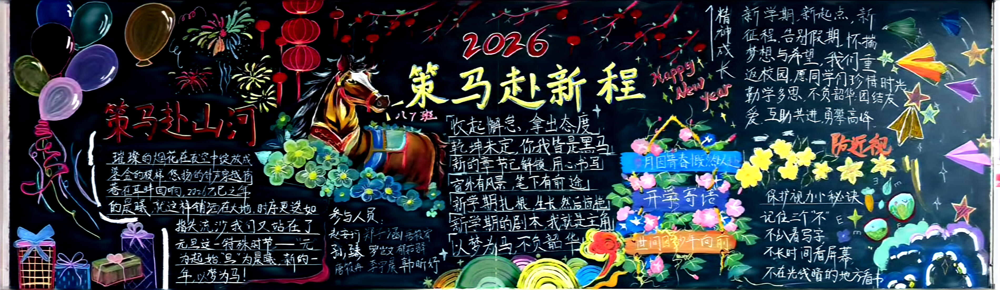

阅读，是我们从未停下的成长脚步。这学期，我们不只在书本中品读文字，更把阅读变成了鲜活的表达 在“鲜衣怒马少年时，不负韶华行且知”升旗仪式上，一脉剧社的成员化身李白、杜甫、辛弃疾一众，用一台饱含少年志的情景剧，把文豪武将的风骨与情怀演绎得淋漓尽致。我们写剧本、磨台词、练表演，在创作中沉淀思考，在演绎中传递力量，让阅读从纸上走进心里，走向更广阔的表达。
悦纳，是我们十四岁最温暖的成长仪式。意义非凡的十四岁生日，我们一起DIY手绘T恤，女生们以十二花神为主题，用明亮色彩绘出少年浪漫，搭配清新半身裙闪亮登场T台秀。我们欣赏每一个创意，包容每一份不同，看见每一位同学的闪光点。我们悦纳差异，彼此成就，四十二种色彩，拼成最温暖、最完整的集体。
愉悦，是我们始终不变的温暖底色。从晓悦队到一脉剧社，从创意写作到即将到来的班班有歌声，我们的 “YUE文化” 一路开花、不断结果。课余时间，我们一起排练合唱、打磨剧本、交流游记、分享创作，在默契配合中收获快乐，在同心协力中感受集体力量。我们等待着，等待班级文化的小树慢慢长大，等待每一份热爱都能绽放，等待每一个梦想都能开花，而我们，就在这棵文化树下，向阳而行，笑语相伴。
超越，是我们这学期最坚定的成长姿态。我们不只超越成绩，更超越自我:从不敢上台到从容展演，是超越;从提笔生涩到游记动人，是超越;从零散爱好到形成一脉剧社、创意写作团队，是超越;从校内活动到乐途走天下，更是超越。
在阅读中沉淀，在乐途中成长，在悦纳中同行，在愉悦中向上，我们超越胆怯，超越局限，超越昨天的自己，一步步成为更优秀的自己、更优秀的集体。各位老师，同学们，这就是我们八（7）航翼中队。四重 “YUE” 文化始终相伴，乐途让我们走得更远，一脉剧社让我们更有光彩，创意写作让我们更有力量
航翼中队的口号：劈波斩浪，扬帆起航！
航翼中队队歌
单击标题以进入
一脉剧社，寓意代际、师生、生生之间的精神传承

单击标题以进入